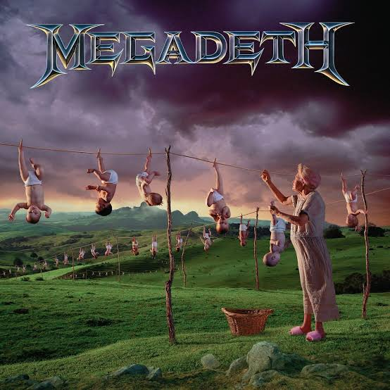

/presentacion:
Hola soy Lautaro
estudiante de ingenieria informatica
Holaa, me llamo Lautaro Manuel Carnicero Garcia, me dicen Lauti, tengo 22 años y soy estudiante de Ingenieria Informatica
Actualmente me encuentro formandome en el universo de la informatica, descubriendo continuamente nuevas areas y tecnologias que despiertan mi interes por la carrera
Soy un chico bastante empatico y muy lanzado. Tengo mucho sentido del humor y suelo estar haciendo algun chiste o intentando sacarle una sonrisa a los demás
Tambien soy bastante perfeccionista con TODO lo que hago, cuando algo me interesa, me gusta hacerlo de la mejor manera posible y prestar atencion continuamente, incluso a los pequeños detalles
Mis intereses son bastante variados, me gustan los juegos de estrategia, la musica, el arte, la fotografia, la lectura y la programacion, tanto frontend como backend
Tambien me interesa muchisimo la historia, los aviones y prácticamente cualquier dato random que pueda aprender, ya sea cientifico, historico o simplemente algo que me parezca interesante
Basicamente, si existe algo que me pueda interesar, probablemente termine investigandolo de una manera u otra
Entre mis hobbies está la musica: toco la guitarra y el teclado, y disfruto muchisimo escuchar musica (sobre todo metal)
También me gusta dibujar, coleccionar vinilos y escucharlos una y otra vez, ademas de leer (bastante)
Me gusta tener hobbies que me permitan crear, aprender o simplemente desconectar un rato de todo lo demas, o tambien llamado "el cable a tierra"

A_Tout_Le_Monde
Megadeth
00:00 00:00
>Megadeth
>Led_Zeppelin
>Deep_Purple
>Black_Sabbath
>Black_Sabbath
Ingenieria_Informatica
Actualmente estudio Ingenieria Informatica en la Universidad Nacional de La Matanza (UNLaM), una carrera que me permite formarme en programacion, sistemas, sistemas embebidos arquitectura de computadoras, diseño web, QA y diferentes areas de la informatica
Piloto_Privado_de_Avion_(PPA)
Por otro lado, estudie la carrera de Piloto Privado de Avion, si bien actualmente lo veo mas como un posible hobby para el futuro, fue una hermosa experiencia que me permitio conocer un mundo completamente distinto e interesante
Tambien disfruto muchisimo hacer cursos y capacitaciones, especialmente cuando puedo profundizar en algun tema que me interese, no necesariamente necesito que algo me sirva laboralmente para querer aprenderlo
Idiomas
Tambien estudie ingles e italiano, y actualmente me gustaria estudiar aleman, siempre me interesaron los idiomas, ya que pueden ser muy utiles tanto en lo cultural como en lo laboral
A lo largo de mi vida hice muchas cosas diferentes
En el ambito artístico forme alguna que otra bandita de musica y pinte cuadros, generalmente muy relacionados con bandas musicales que me gustan
Tambien doy clases particulares de programacion, electronica, matematicas y arquitectura de computadoras
Y, saliendo completamente de la informatica, soy cinturón negro de Taekwondo y fui profesor de defensa personal
También hace mas de 19 años que hago natacion y practico deportes acuaticos
Corto_/_Mediano_plazo
Conocer muchos paises diferentes, principalmente por su historia y cultura
Recibirme de Ingenieria Informatica y continuar aprendiendo todo lo que pueda
Y cumplir uno de mis objetivos más importantes: ser profesor universitario
Largo_plazo
Lograr independencia economica y construir una vida que pueda disfrutar plenamente
Quiero vivir de la manera más euforica posible, aprovechando las oportunidades que aparezcan y disfrutando todo el camino
Creo que esta es probablemente una de las preguntas más dificiles que me hice a mi mismo
Creo que uno nunca sabe realmente a donde esta yendo, sino más bien a donde quiere ir, y aunque no sean exactamente lo mismo, ambos conceptos van de la mano continuamente
Podría decir que voy hacia donde me lleve el viento, porque siento que es hermoso permitir que la vida te sorprenda
Pero nunca dejo que el viento me lleve sin un "mapa" en la mano
Porque por mas vientos que haya, nunca dejaria que me desvíen del camino que quiero seguir
Hace más de 19 años que hago natación